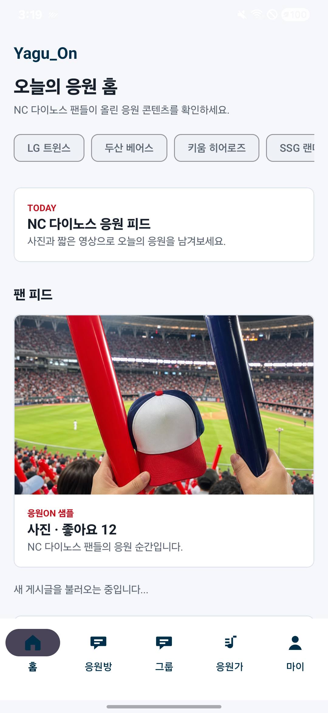
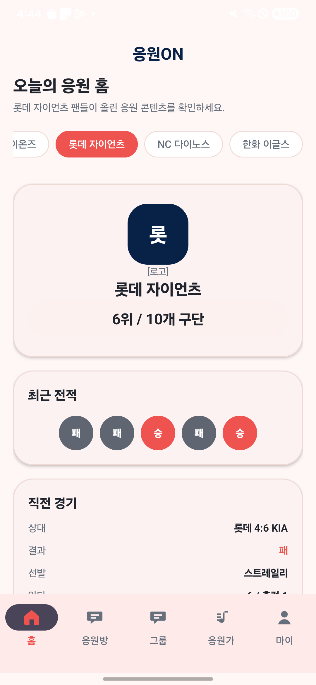
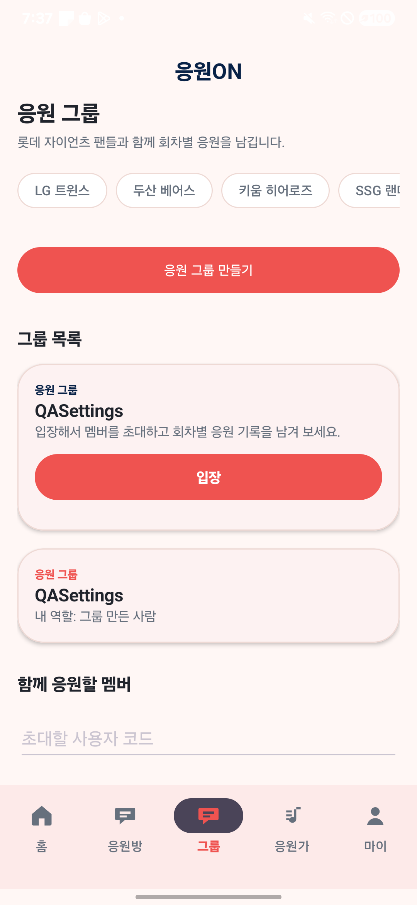
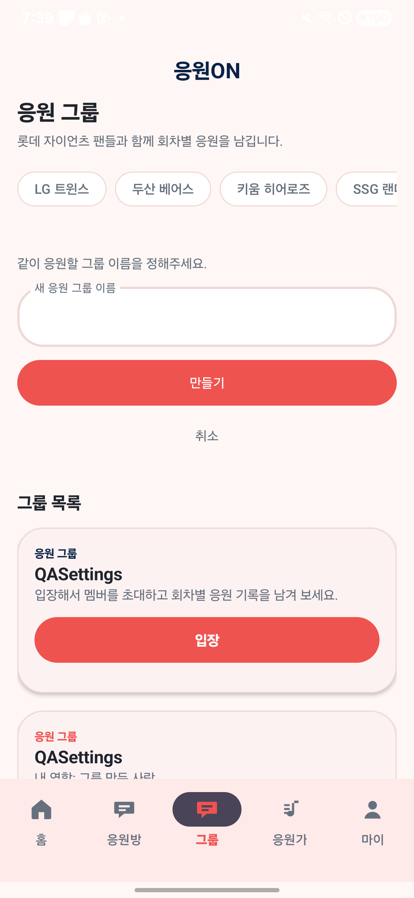

가장 크게 바뀐 것
회색/네이비 중심 화면에서 v0의 피치 배경, 코랄 CTA, 둥근 카드 중심 화면으로 바뀌었습니다.
홈 구성 변경
기존 팬 피드 첫 화면 대신 팀 배지, 순위, 최근 전적, 직전 경기 요약을 먼저 보여줍니다.
그룹 화면 변경
큰 코랄 생성 버튼과 둥근 입력 폼으로 v0의 그룹 리스트/생성 화면 방향을 맞췄습니다.
Firebase 설정 후
Firestore/Storage 설정을 배포한 뒤 실제 그룹 카드와 생성 폼이 캡처에 보입니다.
홈 화면
v0의 롯데 홈 기준입니다. 현재 앱도 롯데 칩을 선택해서 같은 문구와 전적이 보이는 상태로 다시 캡처했습니다.
작업 전 outputs/device-ui-current.png

전: 회색 배경, Yagu_On 로고, TODAY 카드와 팬 피드 이미지가 먼저 노출됩니다.
v0 기준 로컬 재현
응원ON
오늘의 응원 홈
롯데 자이언츠 팬들이 올린 응원 콘텐츠를 확인하세요.
삼성
롯데 자이언츠
NC 다이노스
롯
[로고]
롯데 자이언츠
6위 / 10개 구단
최근 전적
패
패
승
패
승
직전 경기
상대롯데 4:6 KIA
결과패
선발스트레일리
응원방
그룹
응원가
마이
기준: 피치 배경, 코랄 선택 칩, 큰 팀 카드, 전적 원형 칩, 직전 경기 카드입니다.
현재 앱 outputs/qa-v0-home-lotte.png

현재: v0 기준의 색, 팀 카드, 순위, 최근 전적, 직전 경기 문구가 들어갔습니다.
그룹 리스트 화면
v0는 샘플 그룹 카드가 보입니다. 현재 앱도 Firebase 배포 후 실제 생성한 그룹 카드가 보이는 상태입니다.
v0 기준 로컬 재현
응원ON
응원 그룹
롯데 자이언츠 팬들과 함께 회차별 응원을 남깁니다.
LG
롯데
키움
직관 응원방
남산가이즈
온라인 응원단
홈
응원방
응원가
마이
기준: 그룹 카드 목록이 보이고, 만들기 버튼은 코랄색 큰 pill 버튼입니다.
현재 앱 outputs/qa-group-create-after-firebase-settings-2.png

현재: Firebase 설정 배포 후 `QASettings` 그룹 카드와 상세 영역이 실제 데이터로 표시됩니다.
그룹 생성 폼
v0의 둥근 입력창과 코랄 생성 버튼을 현재 앱의 그룹 생성 폼에 반영했습니다.
v0 기준 로컬 재현
응원ON
응원 그룹
롯데 자이언츠 팬들과 함께 회차별 응원을 남깁니다.
LG
롯데
키움
같이 응원할 그룹 이름을 정해주세요.
취소
홈
응원방
응원가
마이
기준: 단순 폼, 큰 라운드 입력, CTA 하나, 취소 텍스트입니다.
현재 앱 outputs/qa-v0-groups-form-firebase-ok.png

현재: 입력창/버튼/취소 위치는 v0 기준에 가깝게 반영됐고, 아래에는 실제 생성된 그룹 카드가 보입니다.
적용 상태표
눈으로 보기 어려운 변경과 아직 남은 차이를 분리했습니다.
| 항목 | 상태 | 설명 |
|---|---|---|
| 피치/코랄/네이비 컬러 | 반영 | 앱 배경, 선택 칩, 버튼, 카드 테두리, 하단 탭 색을 v0 톤으로 조정했습니다. |
| 홈 첫 화면 구조 | 반영 | 기존 팬 피드 중심에서 팀 배지, 순위, 최근 전적, 직전 경기 요약 중심으로 바꿨습니다. |
| 그룹 생성 진입 | 반영 | 큰 코랄 버튼 뒤에 생성 폼이 열리고, 폼은 둥근 입력창과 만들기 버튼으로 표시됩니다. |
| 사용자용 오류 문구 | 반영 | 실제 캡처 XML에서 Firebase, Firestore, UID, owner/admin 같은 개발자용 단어가 잡히지 않습니다. |
| v0 샘플 그룹 카드 | 실데이터 확인 | Firebase 설정 배포 후 실제 기기에서 `QASettings` 그룹 카드가 생성되고 목록에 표시됩니다. |
| 완전 동일한 v0 프로토타입 | 부분 반영 | Android Material 하단 탭 아이콘, 소셜 로그인 버튼 등은 v0와 아직 다릅니다. |